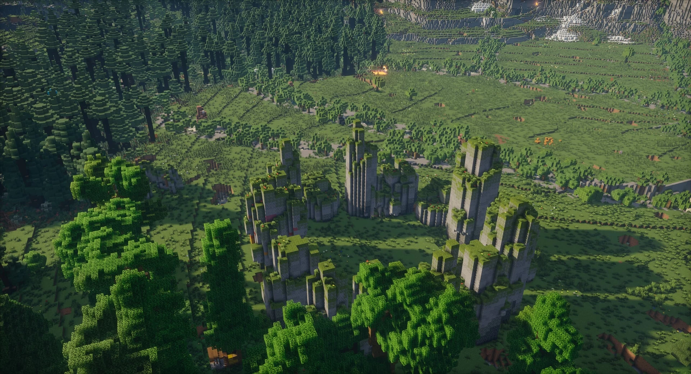
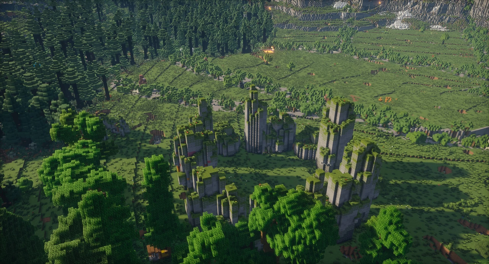

[Map] Woraxstone [1.21+]
Bienvenue dans le monde de Woraxstone, une carte Minecraftcréée par créée par , s’étendant sur une superficie de 4km². Ce monde se distingue par une immense faillequi déchire le sol, créant une ravine colossale aux bords tranchants. Que vous soyez à la recherche d’un terrain pour de la survie ou un constructeur, cette carte vous invite à plonger dans des paysages variés.
Aperçu de la carte du monde de Woraxstone
Des biomes diversifiés
pour une exploration riche
Woraxstone est une île personnalisée qui regorge de biomes variés, allant des déserts arides aux forêts luxuriantes. Chaque recoin offre des paysages uniques à explorer, qu’il s’agisse de forêts, de ballons, ou de falaise idéales pour y construire votre maison. Les biomes ont été améliorés avec des arbres, des plantes et des animaux sur mesure, offrant une faune et une flore immersive.
Structures à butin et
constructions personnalisées
Sur cette carte, les explorateurs trouveront de nombreuses structures à butin telles que des bateaux, des ballons volants et des donjons. En plus de ces éléments, vous trouverez des cavernes personnalisées,des mines abandonnées, des manoirs, et des forteresses. Chaque coin de Woraxstone réserve des secrets à découvrir, offrant des heures de jeu pour les joueurs en mode survie ou créatif.
Un environnement
adapté au mode survie
Woraxstone a été conçue pour être à la fois esthétique et fonctionnelle. Les ressources comme les minerais sont abondantes, et des villages sont dispersés sur l'île pour garantir un démarrage en douceur en mode survie
Galerie
 
